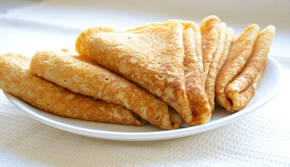

PANCAKES RECIPE
DISH DESCRIPTION
Every nation has its own rich ancient traditions. They are present everywhere: in clothes, everyday life, language, songs, food, etc. Especially interesting are Ukrainian traditions in the preparation of various national dishes. Thus, for every big holiday Ukrainians have a list of obligatory dishes. Can you imagine Christmas without kuti, and Easter without kulich?
The same traditional Ukrainian food is considered to be pancakes. There are many recipes for making pancakes, the invariable ingredients are milk, sugar, salt, eggs, butter. Flour for their preparation can be used differently. The filling can be just as varied. Here everything depends on the ingenuity of the hostess. Perhaps no one would not refuse to eat pancakes with honey, apples, soft cheese, condensed milk, mushrooms, meat, etc.
When cooking pancakes, housewives often face problems: how to bake thin and strong pancakes, or, conversely, puffy and loose. We will reveal to you a few secrets.
- Wheat flour is best for making pancakes. But if you prefer loose pancakes, you can use oat flour or buckwheat flour.
- To avoid lumps, add the flour in small portions, stirring constantly.
- In order for the pancakes to turn out very tender, the flour should be sifted 2-3 times.
- Water is the basis for thin and strong pancakes, but pancakes made with milk are much tastier. Mix milk and water - they will turn out strong and tasty.
- If you bake pancakes on kefir, they will turn out puffy. The same effect you will get if you make pancakes from yeast dough.
- It is desirable to have a separate pan for baking pancakes.
SIMPLE MILK PANCAKE RECIPE
INGRIDIENTS

- Milk - 1 liter
- Eggs - 4 pieces
- Flour - 500 g
- Vegetable oil - 2 tablespoons
- Sugar - 1.5 tablespoons
- Salt - 0.5 teaspoons
COOKING PROCESS
- In a large bowl, beat the eggs and sugar.
- Heat part of the milk, salt and mix thoroughly with the beaten eggs and sugar.
- Gradually add flour to the resulting mixture, stirring constantly so that there are no lumps.
- Add a little baking soda, salt and butter. Stir.
- Add the rest of the milk and whisk. The batter should be moderately runny.
- Heat a frying pan.
- Fry the pancake on both sides until golden.
another recipes
the history of pancakes